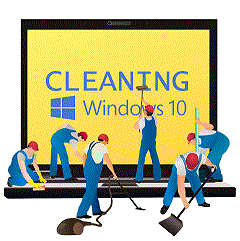
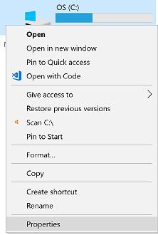
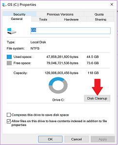
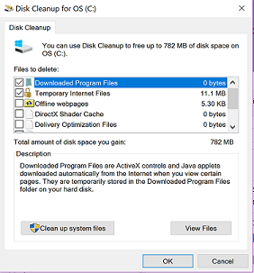
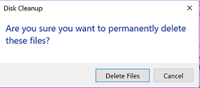

What does "disk cleanup" do?
Disk cleanup is a process that goes through your hard drive and finds files that are no longer needed. This includes:
- Windows system files that have been replaced by newer versions
- files you have deleted that are sitting in the recycle bin
- update files that have already been installed
- files created when browsing the internet
- temporary files created by programs running on your machine that they no longer need
Running a disk cleanup makes more room for files you actually need or want, and gets rid of junk files you don't. It can also help your system run a little faster because it doesn't have to search through hundreds of old files to find the one it needs. Cleanup doesn't need to be run daily, the files don't usually build up that fast, but it's a good idea to run it 2-4 times per year depending on how much you use your computer.
How to do a disk cleanup
To perform a disk cleanup, follow these steps:
- Open File Explorer
- In the left hand side, click This PC
- In the main section of the window, right-click on the C: drive and select properties from the menu that appears:
 (don't worry if you don't have the same menu options shown here, that's not important)
- From the dialog window that appears, click the Disk Cleanup button about two-thirds of the way down the page:

- The window that opens will list the areas it is capable of cleaning and the space that will be freed up if you
select that option:

- If you want to free the space, make sure you click the small box on the left side of the list to check the box
as included in cleanup.
- Once you have everything checked that you want to cleanup, click OK at the bottom of the window
- You'll get a prompt asking if you are sure you want to delete those files:

- Click Delete Files to start the cleanup
You'll see a progress bar as the files are deleted, that will close when the file cleanup is completed. The longer
you go without cleaning you disk, the more disk space you can usually recover.